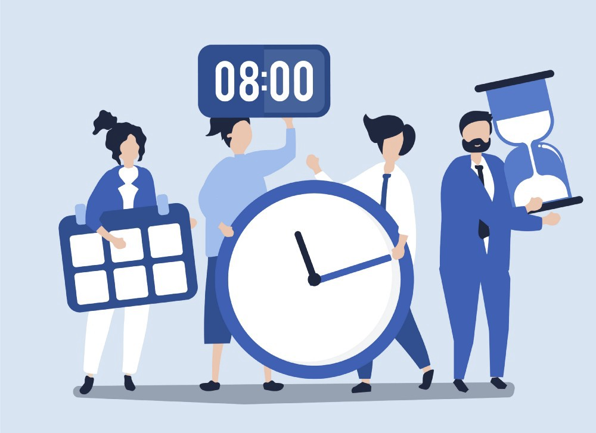

В управлении временем можно выделить следующие процессы:
• Анализ.
• Моделирование стратегий с учётом проведённого анализа.
• Целеполагание: постановка цели или определение ключевого направления развития. Определение и формулирование цели (целей).
• Планирование и расстановка приоритетов. Разработка плана достижения поставленных целей и выделение приоритетных (первостепенных) задач для выполнения.
• Реализация — конкретные шаги и действия в соответствии с намеченным планом и порядком достижения цели.
• Контроль достижения цели, выполнения планов, подведение итогов по результатам. Также в случае, если лицо или группа лиц, которые практикуют управление временем, планируют и далее осуществлять проекты, то целесообразно вести хронометраж и фиксировать результаты анализа хронометража в виде «карточек проекта» (запись по параметрам различного характера показателей расходов времен).